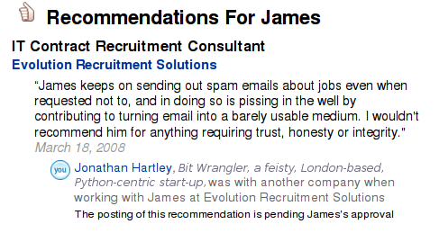

The Long Overdue LinkedIn Backlash

We've all known this for a long time, but I don't remember anyone actually saying it out loud: Have you ever noticed how it's always the most industrious LinkedIn users who are the very last people you'd actually recommend in a genuine network of trust?
The most ruthless networkers, climbing every last tenuous connection like an insidious vine. Grasping for unearned advantage at every node. Can you introduce me to so-and-so? If you link to me, I'll have over 500 connections, think how popular that will make me look. My preciousss connectivity. Somehow, this kind of behaviour also correlates well with other repugnant activities, like spamming. Some people just have no conception of how their actions change the world around them for better or worse, and hence act as though they had no responsibilities to the community around them.
One final spam this morning broke the camel's back. I've asked him not to do it before, both personally, and via the captcha screen he disingenuously filled in to get onto my whitelist. So it's time for LinkedIn to start pulling its weight. I notice there is no mechanism to add a negative recommendation via LinkedIn, so I've been forced to add him as a connection and then leave a suitable-worded positive one. Hopefully it still conveys my intended semantic.
It may be that publicly dissing a recruiter is not the wisest of career moves, and maybe James will get retaliatory. I weighed that up for a while, and decided I can risk that. I don't operate on appearance. I operate on substance. I can take it. Some things are right, and some things are wrong, and It's time to take a stand.
Unfortunately, even this is a half-hearted measure - I think James needs to approve it for it to be attached to his profile, and that seems unlikely from my perspective. Who knows, though? Maybe he's actually a stickler for accurate representation who relishes feedback.
So this got me thinking. Forget LinkedIn - it's clearly designed to appeal to vacuous self-congratulators. What attributes would we want from a *real* network of trust? Clearly some mechanism for leaving public negative feedback would be one of them. Can that be done in a way that can't be abused? What else does it need?